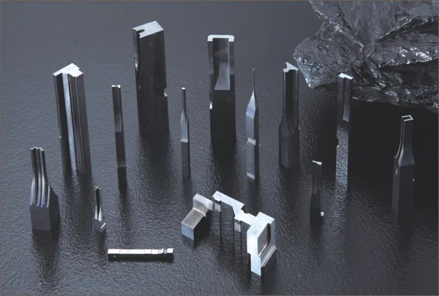
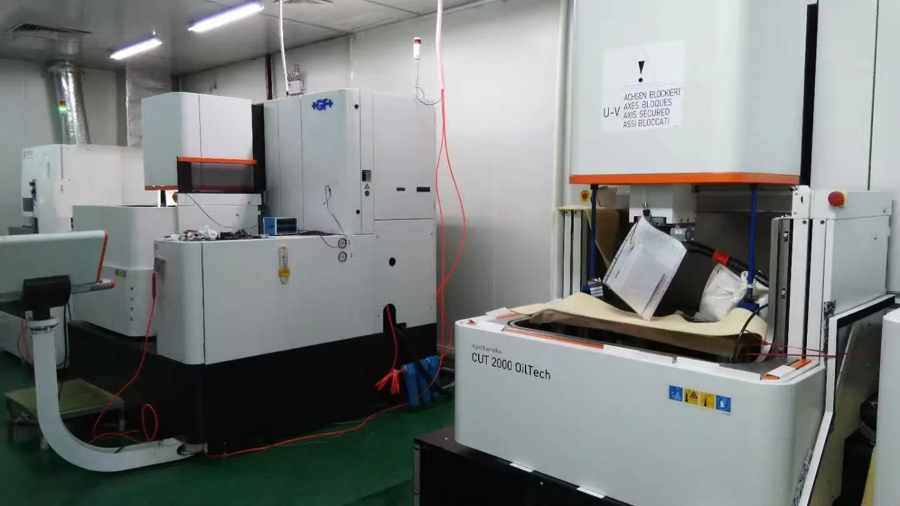
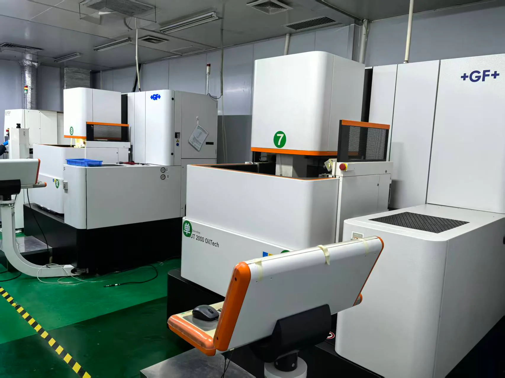
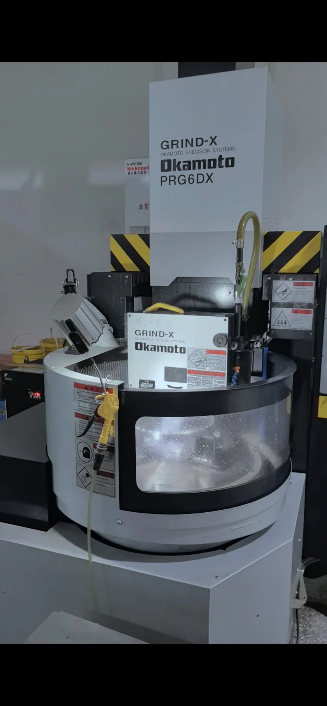

Carbide and electronics experience
Strong in precision metal components for electronic parts, with carbide, steel and ceramic material support for connectors, precision stamping and automation parts.
Precision Components Manufacturer
Focused on high-precision grinding, fine wire EDM and mirror EDM for connector, precision component and automation customers.
Opens your email app. Please attach your PDF, STEP or CAD drawings.


Company Profile
Jinyi Precision focuses on custom precision component machining, especially carbide parts, precision metal components for electronic parts, profile grinding and fine wire EDM. The company values communication with domestic and overseas customers and focuses on quality, responsive communication and timely delivery.
Strong in precision metal components for electronic parts, with carbide, steel and ceramic material support for connectors, precision stamping and automation parts.
Processing environment, equipment selection and measurement methods are built around dimensional stability, surface roughness and verifiable data.
Profile grinding experience supports more reliable process planning for complex forms, miniature blade features and carbide components.
PVD, TiAlN, DLC, HA and UPC coating options can be selected according to life, friction and film-thickness requirements.
In addition to Japanese materials, alternatives from Taiwan and China can be selected to meet quality and cost requirements, with Jinyi responsible for quality assurance.
Beyond carbide parts, resin-molding related components, die sets, plates and round parts can be supported through partner factories.
Manufacturing Capability
Equipment configuration, machining accuracy, surface roughness and workable sizes are presented clearly for RFQ and engineering review.
Japanese WAIDA CNC profile grinding for high-precision formed edges, punches, inserts and carbide precision components. Actual achievable results depend on component geometry, material and machining conditions.
Seibu Electric water-dielectric and oil-dielectric wire EDM support fine-wire cutting and precision contours.
Sodick AD30LS machines support fine EDM, mirror EDM and complex micro-feature processing.
Precision grinding, machining and selected partner operations support plates and fixture components.
Core Services
Explore our machining services, materials and inspection information to find the right process for your components.
Fine wire, water wire and oil wire EDM for small R corners, complex contours and high-precision plates.
View Service 02WAIDA PG profile grinding for formed edges, punches, inserts and carbide precision components.
View Service 03KD / EF / FD / RD carbide materials for wear-resistant punches, blades and precision inserts.
View Service 04ZKA-901 and NPZ-series ceramic component machining for insulation, wear resistance and precise positioning.
View Service 05Precision plates, cores, inserts and small mold component machining support.
View ServiceEquipment
Only equipment supported by current confirmations is listed. Specifications follow slide 9 of the company presentation; they do not guarantee maximum finished-part dimensions or effective machining travel. The Seibu Electric water-dielectric wire EDM group totals 8 machines and is separate from oil-dielectric wire EDM.


Equipment Gallery
Key equipment photos are organized by process, workshop environment and inspection scenario for quick review.
Quality Assurance
Temperature-controlled processing and standardized inspection methods support dimensional stability for precision components. Our ISO 9001:2015 certification scope is the production of precision mold accessories. Jinyi Precision owns and operates a Hexagon 686 coordinate measuring machine (CMM) in-house. Dimensional inspection follows the project requirements and agreed inspection plan.
Most manufacturing equipment and processes are in-house, with selected external processing. The machining route, partner operations and inspection requirements are confirmed for each project.
Product Examples
Representative machining examples show supported component types, material ranges and typical application scenarios.
Materials & Coatings
Carbide, steel, ceramic and coating options can be selected according to drawings, service life requirements and cost targets.
Case Studies
Common RFQ scenarios show how Jinyi Precision supports drawing review, process planning, material selection and dimensional inspection.
Customer Experience
We support customers in connector, electronic component, precision stamping and precision manufacturing-related fields, with attention to quality, delivery and clear engineering communication.
FAQ
Providing drawings, material specifications, quantities, tolerances and delivery requirements helps us assess manufacturability and prepare an accurate quotation.
Technical Blog
Practical articles for purchasing managers, mechanical engineers and quality engineers evaluating wire EDM, PG grinding, carbide and ceramic components.
Understand wire EDM principles, applications, tolerances and RFQ requirements.
ArticleCompare wire EDM and CNC machining for precision component sourcing.
ArticleLearn why PG profile grinding matters for formed edges and carbide components.
ArticleReview wear resistance, service life and tooling benefits of carbide parts.
ArticleExplore ceramic part applications in insulation, wear resistance and precision tooling.
Contact
Please share 2D / 3D drawings, material, quantity, tolerance, surface treatment and delivery requirements for faster evaluation.